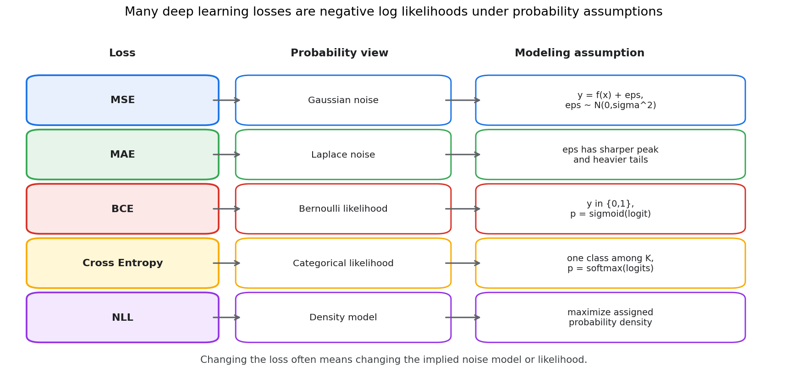
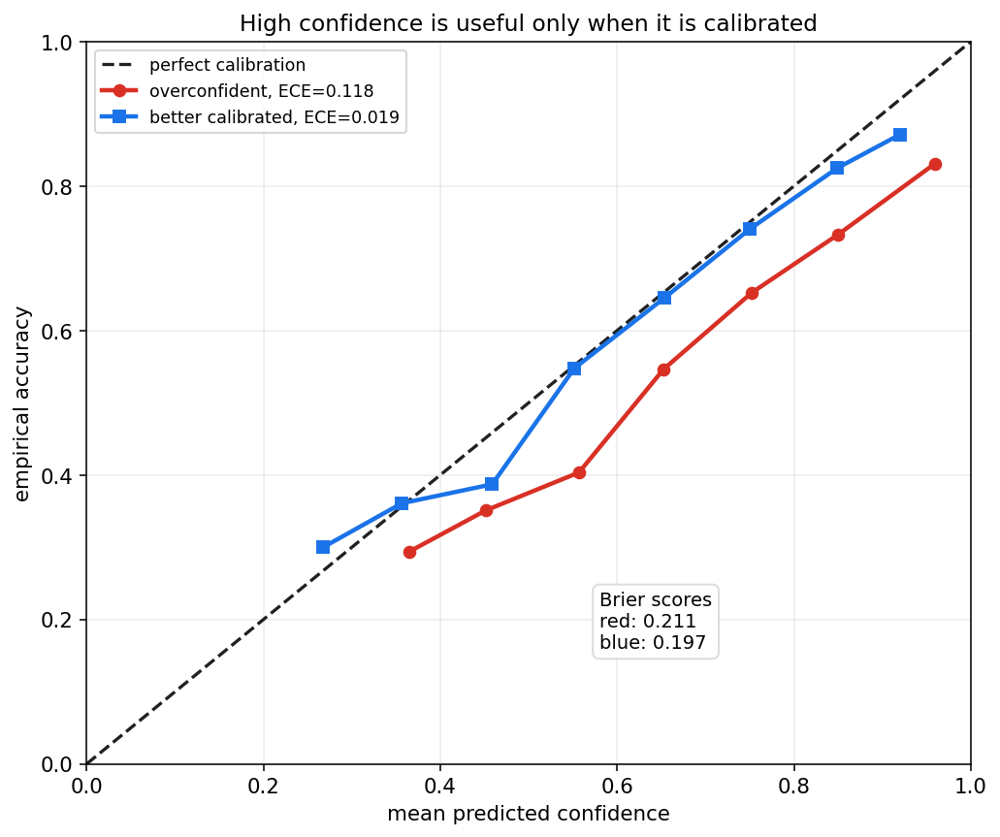
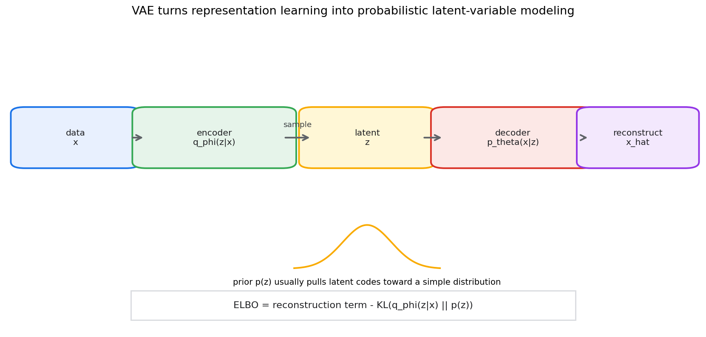
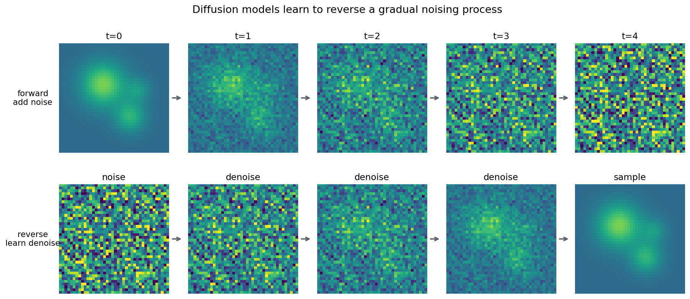

统计学习第十八章教程: 深度学习中的概率统计视角
前面几章已经讲过经验风险, 泛化, 正则化, 概率模型和潜变量模型.
第十八章把这些语言接到深度学习:1. 为什么 MSE, MAE, BCE, Cross Entropy 不是随便选的损失?
2. Softmax 输出为什么能看成概率, 又为什么不一定可靠?
3. 正则化, Dropout, BatchNorm 和 SGD 噪声背后有什么统计直觉?
4. 校准和不确定性为什么是深度模型落地时绕不开的问题?
5. VAE 和 Diffusion 怎样从概率建模角度理解?本章不是深度学习教程, 而是给深度学习补上一层概率统计解释.
0. 先看全章主线
flowchart LR
A["深度学习"] --> B["监督损失"]
B --> C["回归<br/>MSE, MAE"]
B --> D["分类<br/>BCE, CE, Softmax"]
A --> E["正则化"]
E --> F["Weight decay<br/>先验直觉"]
E --> G["Dropout<br/>随机扰动"]
A --> H["训练统计"]
H --> I["BatchNorm<br/>批统计量"]
H --> J["SGD<br/>随机梯度噪声"]
A --> K["可靠性"]
K --> L["校准"]
K --> M["不确定性估计"]
A --> N["生成模型"]
N --> O["VAE<br/>ELBO"]
N --> P["Diffusion<br/>去噪概率过程"]
A --> Q["表示学习<br/>互信息直觉"]一句话概括:
深度学习里的很多目标函数, 归一化, 随机训练技巧和生成模型,
都可以回到似然, 先验, 后验, 熵, KL, 抽样误差和泛化这套语言里理解.
1. 为什么要用概率统计视角看深度学习
1.1 神经网络首先是函数族
给定参数 $\theta$, 神经网络定义一个函数:
它可以输出:
- 回归预测值
- 分类 logit
- 概率分布参数
- 图像, 文本或其他结构化对象
从统计学习角度看, 神经网络只是一个非常大的假设空间.
训练是在这个函数族里寻找让经验风险较小, 同时能泛化的参数.
1.2 损失函数不是纯工程选择
深度学习常说:
训练模型就是最小化 loss.
但概率统计会继续追问:
这个 loss 对应什么数据生成假设?
很多常见损失都可以写成负对数似然:
因此, 损失函数不仅是优化目标, 也是模型对噪声和数据分布的假设.
1.3 深度学习并没有绕开不确定性
深度模型参数多, 表达能力强, 但它仍然面对:
- 数据是有限样本
- 标签可能有噪声
- 训练集和测试集可能不同分布
- 模型输出概率可能不校准
- 高维空间中会出现分布外样本
所以概率统计不是深度学习的附属品, 而是理解可靠性和泛化的核心语言.
2. 回归损失与噪声假设
2.1 MSE 对应高斯噪声
回归中常用平方损失:
如果假设:
那么条件密度为:
取负对数并忽略常数后, 就得到平方损失:
所以 MSE 隐含的直觉是:
误差围绕 0 对称, 大误差按平方受到更重惩罚, 噪声像高斯分布.
2.2 MAE 对应 Laplace 噪声
绝对误差损失为:
如果误差服从 Laplace 分布:
那么负对数似然就对应绝对误差.
MAE 相比 MSE 对异常值更稳健, 因为大误差不会被平方放大.
这不是说 MAE 一定更好, 而是它表达了另一种噪声假设.
2.3 损失和概率假设对照

选择损失时可以问三个问题:
- 输出变量是连续值, 二分类标签, 多分类标签, 还是概率分布?
- 噪声是否近似对称, 是否有重尾, 是否有异常值?
- 模型输出的是点预测, 还是分布参数?
如果模型输出均值和方差:
就不再只是做点预测, 而是在估计条件分布.
3. BCE, Cross Entropy 与分类似然
3.1 二分类和 Bernoulli 似然
二分类标签:
模型输出:
Bernoulli 似然为:
负对数似然为:
这就是 binary cross entropy.
3.2 多分类和 Categorical 似然
多分类中:
模型输出一个概率向量:
若真实类别是 $c_i$, 则负对数似然为:
如果把标签写成 one-hot 向量 $y_{ik}$, 则交叉熵为:
这就是多分类负对数似然.
3.3 交叉熵和 KL
对真实分布 $p$ 和模型分布 $q$:
训练时真实分布固定, 最小化交叉熵等价于最小化:
所以分类训练不仅是在让正确类分数变大, 也是在让模型预测分布接近数据标签分布.
3.4 标签平滑
普通 one-hot 标签把正确类概率设为 1, 其他类设为 0.
标签平滑会改成:
它的直觉是:
- 不把标签当成绝对确定
- 避免模型过度自信
- 在部分类别边界模糊时更稳定
但标签平滑也可能降低模型对真实置信度的表达能力, 需要结合任务验证.
4. Softmax 的概率解释
4.1 从 logits 到概率
神经网络分类头通常先输出 logits:
Softmax 把它们变成概率:
它满足:
因此可以把 $p_k$ 解释成:
4.2 logits 的相对性
Softmax 只关心 logits 的相对差异.
如果给所有 logits 加同一个常数:
Softmax 输出不变.
真正影响概率的是类别之间的差:
这也是为什么分类模型的 logit margin 会影响置信度.
4.3 温度参数
带温度的 Softmax 为:
当 $T$ 较大, 概率更平滑.
当 $T$ 较小, 概率更尖锐.
温度缩放常用于后处理校准:
注意, Softmax 输出形式上是概率, 但不保证是可靠概率.
5. 正则化, Dropout 与先验直觉
5.1 Weight decay 和高斯先验
深度学习常用 weight decay:
从 MAP 角度看, 如果参数先验为:
那么负 log prior 会给出 L2 惩罚:
所以 weight decay 的统计直觉是:
在没有足够数据支持时, 不希望参数离 0 太远.
5.2 L1 正则和稀疏先验
L1 正则:
对应 Laplace 型先验:
它更倾向于稀疏解.
在深度网络中, L1 不是最常见选择, 但在特征选择, 稀疏连接或可解释模型中仍有意义.
5.3 Dropout 的随机扰动直觉
Dropout 在训练时随机屏蔽一部分神经元:
它的作用可以从几个角度理解:
- 防止单个特征通道过度依赖其他通道
- 给网络加入随机扰动, 类似训练许多子网络的平均效果
- 在某些近似下, 可以和贝叶斯模型平均建立联系
这里要保持边界:
普通 Dropout 不是完整贝叶斯推断, 但它提供了一种随机模型平均的直觉.
5.4 数据增强也是先验
图像翻转, 裁剪, 颜色扰动, 文本替换等数据增强, 本质上表达了对任务不变性的先验:
如果某些变换不改变标签, 模型就应该学会对这些变换不敏感.
这和概率统计中的建模假设类似.
区别只是它通过训练数据分布的扰动来实现.
6. BatchNorm 与统计量
6.1 批均值和批方差
Batch Normalization 对一个 mini-batch 中的激活计算:
再标准化:
最后做可学习的仿射变换:
这里的 $\mu_B$ 和 $\sigma_B^2$ 就是样本统计量.
6.2 训练和推理不一样
训练时, BatchNorm 使用当前 batch 的均值和方差.
推理时, 通常使用训练过程中维护的 running mean 和 running variance.
这带来几个实践问题:
- batch 太小时, 统计量噪声大
- 训练和推理数据分布不一致时, running statistics 可能失效
- 分布式训练中, 不同设备上的 batch statistics 可能不同
所以 BatchNorm 不只是一个层, 也是一个依赖抽样统计稳定性的机制.
6.3 BatchNorm 的正则化效果
由于每个 mini-batch 的均值和方差都有随机波动, BatchNorm 会给训练过程引入噪声.
这种噪声有时能改善泛化.
但这不是无条件成立.
在小 batch, 序列模型, 强分布偏移或精确数值任务中, LayerNorm, GroupNorm 或不使用归一化可能更合适.
7. SGD 噪声与泛化直觉
7.1 mini-batch 梯度是随机估计
总体经验风险梯度为:
mini-batch 梯度为:
如果 batch 是随机抽取的, 那么:
但每次更新都有随机波动.
7.2 batch size 和学习率影响噪声
batch size 越小, 梯度估计方差通常越大.
学习率越大, 每次随机波动对参数的影响越大.
这解释了为什么下面这些量会共同影响训练:
- batch size
- learning rate
- momentum
- weight decay
- gradient clipping
- warmup 和 decay schedule
它们不是孤立超参数, 而是在共同塑造优化轨迹和隐式正则化.
7.3 平坦极小值直觉
深度网络可能有很多训练误差相近的解.
有些解周围很尖锐, 参数轻微变化就让损失大幅上升.
有些解周围较平坦, 参数扰动后损失变化较小.
SGD 噪声可能让模型更不容易停在过尖的极小值附近.
这只是直觉而不是万能定理, 但有助于理解为什么随机训练过程会影响泛化.
8. 校准与置信度
8.1 准确率和置信度不同
分类模型输出:
通常被称为 confidence.
但置信度高不等于预测可靠.
一个模型如果在所有置信度约为 0.8 的样本中, 实际正确率也约为 0.8, 则它在这个区间是校准的.
8.2 可靠性图

可靠性图把样本按预测置信度分桶, 比较:
- 横轴: 平均预测置信度
- 纵轴: 实际正确率
如果曲线贴近对角线, 说明预测概率更接近真实正确率.
如果曲线低于对角线, 模型通常过度自信.
8.3 常见校准指标
Expected Calibration Error 可写成:
Brier score 为:
在多分类中, Brier score 可以扩展到概率向量.
校准方法包括:
- temperature scaling
- Platt scaling
- isotonic regression
- deep ensemble
- 后验预测平均
校准通常要在验证集上做, 不能用测试集调.
9. 不确定性估计
9.1 两类不确定性
常见区分是:
- Aleatoric uncertainty: 数据自身噪声导致的不确定性
- Epistemic uncertainty: 模型知识不足导致的不确定性
例如医学影像中, 图像模糊或标签边界不清属于 aleatoric.
训练集中几乎没有某类病例, 模型不知道该怎么判断, 属于 epistemic.
9.2 回归中的异方差建模
如果噪声大小随输入变化, 可以让模型同时输出:
并设:
负对数似然为:
这个目标会惩罚两种行为:
- 预测均值错得很离谱
- 盲目把方差预测得很大
9.3 模型不确定性方法
估计 epistemic uncertainty 的常见方法包括:
- 深度集成: 训练多个模型, 比较预测差异
- MC Dropout: 推理时保留 Dropout, 多次采样
- Bayesian neural network: 对权重建后验分布
- Laplace approximation: 在最优点附近近似后验
这些方法成本和假设不同.
工程上深度集成常常简单有效, 但训练成本较高.
9.4 分布外样本
一个模型在训练分布内校准, 不代表它能识别分布外样本.
分布外输入可能让 Softmax 仍然输出很高置信度.
所以可靠系统通常需要额外机制:
- OOD detection
- abstention 或 reject option
- 人工复核策略
- 数据漂移监控
- 周期性再校准
10. VAE 中的概率建模与 ELBO
10.1 潜变量生成模型
VAE 假设数据由潜变量生成:
联合分布为:
目标是最大化边缘似然:
但这个积分通常难以直接计算.
10.2 近似后验
VAE 引入 encoder:
来近似真实后验:
因此 VAE 同时学习:
- decoder: 生成模型 $p_\theta(x\mid z)$
- encoder: 近似推断模型 $q_\phi(z\mid x)$

10.3 ELBO
VAE 最大化 evidence lower bound:
第一项是重构项, 鼓励 $z$ 保留能解释 $x$ 的信息.
第二项是 KL 正则, 鼓励近似后验不要偏离先验太远.
10.4 重参数化技巧
如果:
可以写成:
这样随机性来自 $\epsilon$, 参数 $\phi$ 仍可通过梯度优化.
10.5 VAE 的统计直觉
VAE 可以看成:
用神经网络参数化潜变量概率模型, 再用变分推断近似后验.
它不是只会做图像生成的技巧, 而是第十三章和第十七章思想在深度模型中的实现.
11. Diffusion 模型的噪声视角初步
11.1 前向加噪过程
Diffusion 模型从一个逐步加噪过程开始.
简单写作:
随着 $t$ 增大, 数据逐渐接近噪声.
11.2 反向去噪过程
生成时从噪声开始:
然后学习反向过程:
逐步去噪得到样本.

11.3 为什么可以训练成预测噪声
很多扩散模型训练目标会让网络预测加到样本上的噪声:
常见简化目标为:
这和高斯噪声假设, 条件均值估计, 变分下界都有关系.
完整推导较长, 本章只强调概率主线:
先定义一个容易采样的前向随机过程,
再训练神经网络近似它的反向条件分布.
11.4 不要混淆数学目标和视觉效果
Diffusion 生成效果好, 不代表训练目标只是为了让图像好看.
它背后仍然是概率建模, 去噪估计和近似似然优化.
工程中的采样器, guidance, scheduler 会显著影响结果, 但它们是在这个概率框架上继续做近似和控制.
12. 表示学习与互信息直觉
12.1 什么是表示
神经网络中间层会把原始输入变成表示:
好的表示通常希望:
- 保留和任务 $Y$ 有关的信息
- 丢掉和任务无关的噪声
- 对合理变换保持稳定
- 在下游任务中容易线性分离或建模
12.2 互信息视角
互信息衡量两个变量共享的信息:
表示学习可以用一种直觉来理解:
希望表示 $H$ 对标签 $Y$ 信息量大, 对无关扰动信息量小.
这不是说实际训练总是直接最大化互信息.
很多方法只是间接实现这种目标.
12.3 对比学习
对比学习常构造正样本对和负样本对:
- 同一图像的两种增强视图是正样本
- 不同图像通常作为负样本
目标是让正样本表示接近, 负样本表示分开.
概率统计语言下, 这和密度比估计, 信息下界和分类式目标有关.
实践中更重要的是明白增强策略表达了什么不变性假设.
13. 实战清单
训练或评估深度模型时, 可以按下面顺序检查:
- 输出变量类型是否和损失匹配?
- 损失函数隐含的噪声假设是否合理?
- 分类任务是否需要校准, 是否要报告 ECE 或 Brier score?
- 是否存在类别不平衡, 标签噪声或分布偏移?
- 正则化强度, 数据增强和 weight decay 是否在验证集上验证?
- BatchNorm 的 batch size 和推理统计量是否稳定?
- 学习率, batch size 和梯度噪声是否共同调试?
- 是否需要区分 aleatoric 和 epistemic uncertainty?
- 生成模型指标是否同时覆盖似然, 样本质量和多样性?
- 是否有分布外检测, 拒识或人工复核流程?
14. 典型易错点
14.1 只把 loss 当成可调函数
loss 背后通常有概率假设.
如果假设和数据不匹配, 训练仍然可能收敛, 但结论不一定可靠.
14.2 把 Softmax 输出当成真实概率
Softmax 保证输出非负且和为 1, 但不保证校准.
过拟合模型, 分布外样本和标签噪声都可能导致高置信错误.
14.3 混淆准确率和可靠性
两个模型准确率相同, 校准水平可能差很多.
在医疗, 金融, 自动驾驶等场景, 概率可靠性和错误代价同样重要.
14.4 把 Dropout 当作完整贝叶斯方法
Dropout 可以提供随机模型平均直觉, MC Dropout 可以估计一部分不确定性.
但它不等于完整后验推断, 也不能自动解决分布外可靠性问题.
14.5 只用样本好看评价生成模型
生成模型需要同时考虑:
- 样本质量
- 多样性
- 条件一致性
- 似然或近似似然
- 下游任务表现
- 安全和偏差风险
视觉效果只是其中一部分.
15. 本章小结
这一章把深度学习中常见对象重新翻译成概率统计语言:
- MSE 和 MAE 对应不同噪声假设
- BCE 和 Cross Entropy 是分类似然的负对数
- Softmax 给出概率形式, 但可靠性要靠校准检验
- 正则化和 Dropout 可以从先验和随机扰动角度理解
- BatchNorm 依赖 mini-batch 统计量
- SGD 的随机梯度噪声会影响优化和泛化
- 不确定性需要区分数据噪声和模型知识不足
- VAE 是神经网络化的潜变量模型和变分推断
- Diffusion 是学习反向去噪条件分布的生成模型
- 表示学习可以用信息保留和不变性来理解
到这里, 概率论, 数理统计, 贝叶斯和统计学习已经接到了现代深度学习.
下一章会回到真实数据工作流: 怎样评估模型, 选择模型, 做决策, 并避免研究和工程中的常见统计陷阱.